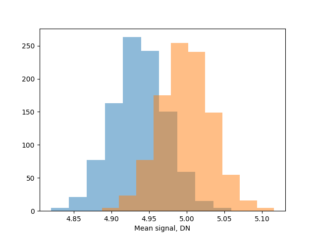
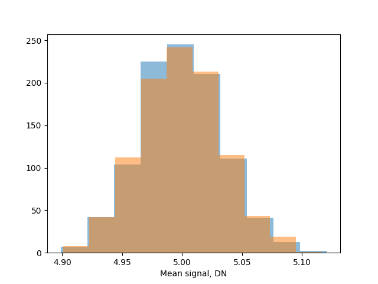

Maximum Likelihood Estimation and Photon Counting in CMOS Cameras
Imagine this scenario: you have a single pixel camera that is recording light collected by a microscope, and the output of the pixel is in "arbitrary units." What can you say about the number of photoelectrons that were recorded by the pixel during its exposure time?
In this post I will look at using maximum likelihood estimation (MLE) to answer this question. The answer will be disappointing because it will be obvious in hindsight, but by elaborating the method I hope to:
- better understand how to apply MLE to general problems in photon transfer, and
- establish a strategy for solving more complex problems.
Furthermore, in statistics, I have found that it is easy to get the right answer for the wrong reasons. I hope that this post will give you a sense of what the right reasons should look like.
Some Notation
First, let's establish some mathematical notation. As far as I know, there is no standard notation; I tend to follow a combination of that used by Papoulis and Pillai and what is presented on Wikipedia. With my choice of notation I attempt to balance the amount of "ink" used to represent formulas against using unusual characters to highlight situations where I find that intuition can often fail.
First, a random variable (r.v.) \( X \) is a function that maps the outcome of an experiment \( \omega \) to a number. The notation \( X \left( \omega \right) \) denotes the value that a random variable assumes when the event \( \omega \) occurs, not the function itself. As an example \( \omega \) could represent the event \( \text{five photoelectrons were generated} \). We are free to choose whatever number represents this event, but I think that it is most sensible to choose the integer 5. The notation \( \{ X = 5 \} \) represents the set of all events where the r.v. assumes the value 5. If we choose r.v. such that \( \text{one photoelectron was generated} \rightarrow 1 \), \(\text{two photoelectrons were generated} \rightarrow 2 \), and so on, then \( \{ X = 5 \} \) represents the set of only one event, namely the event where \( \text{five photoelectrons were generated} \).
The probability that a r.v. \( X \) assumes a value \( k \) is denoted \( P \{ X = k \} \).
Single Pixel Imaging
The Forward Model: Photon Transfer
Let's assume that we have a single pixel. Light with an average number of photons \( \bar{N} \) hits the pixel during the pixel's integration time. The average number of photoelectrons that are generated within the pixel is
$$ \bar{N_i} = \text{QE} \times \bar{N} $$
where the subscript \( i \) stands for "interacting," i.e. photons that interacted with the pixel. In the visual region of the electromagnetic spectrum, we can safely assume that the quantum yield, i.e. the number of electrons generated per interacting photon, is 1, so that the quantum efficiency \( \text{QE} \) is the same as the interacting quantum efficiency \( \text{QE}_i \)1.
Now, this post is about MLE and photon counting. It is not about accurate models of CMOS cameras. I am therefore going to make very unrealistic simplifications from this point. A pixel does not output values in units of electrons but rather digital numbers, or \( \text{DN} \). To convert from electrons to \( \text{DN} \) we multiply the average photoelectron signal by the analog-to-digital (ADC) converter gain of the pixel, \( A \).
$$ \bar{S} = A \bar{N_i} $$
The above model ignores read noise and any constant bias term in the ADC, but is sufficent to illustrate how MLE works.
Note that I also use overbars on variables to denote means. This is not common in the literature on photon transfer theory, but I think it's important to emphasize that the camera models transfer means and standard deviations between physical units and \( \text{DN} \)s. In fact, this will lead to problems as we will see later.
The Forward Model: Random Variables
The problem with the forward model derived above is that it relates only the means and standard deviations of signals as they are transformed by a camera. MLE requires working with random variables and probabilities.
At first glance, you might think that the relationship that relates the mean photon signal to the mean camera signal \( \bar{S} = A \bar{N_i} \) implies that \( S = A N_i \) with \( S \) and \( N_i \) being random variables. This is not true in general.
To see why, consider a counter example where we add a r.v. \( X \) to our camera signal such that \( S = A N_i + X \) . Let the expected value of \( X \) be zero. Then, the relationship between means \( \bar{S} = A \bar{N_i} \) is the same as before, but the r.v. \( S \) does not follow from it.
So let's rederive the forward model for this simple example in terms of random variables.
Photon Statistics
The interacting photon shot noise \( \sigma_{SHOT}^2 \) is described by Bose-Einstein statistics. At room temperature and for wavelengths less than about \( 10 \, \mu m \), the shot noise simplifies to the familiar \( \sigma_{SHOT} = \bar{N_i}^{1/2} \)2.
Let \( N_i \) be a r.v. that represents the number of interacting photons recorded by the pixel during the integration time. The probability that there will be \( k \) interactions with the pixel is described by Poisson statistics:
$$ P \{ N_i = k \} = \frac{\bar{N_i}^k}{k!} \exp{ \left( -\bar{N_i} \right) } $$
The Poisson distribution is consistent with the relationship between the shot noise and the mean signal strength mentioned above.
Now, recall that we don't directly measure the number of interacting photons with our pixel; we measure pixel values in \( \text{DN} \). Let \( S \) be a r.v. that represents this signal. What is its probability mass function?
DN Statistics
To obtain the probability mass function for the camera signal, we need to scale the Poisson distribution by the constant factor \( A \). First, we write down the probability \( P \{ S = A N_i \} \).
Next, we solve the equation inside the brackets for \( N_i \). and use the expression above for the probability mass function \( P \{ N_i = k \} \):
$$ P \{ N_i = S/A \} = \frac{\bar{N_i}^{S / A}}{\left( S / A \right)!} \exp{ \left( -\bar{N_i} \right) } $$
Now, the probability \( P \{ S = A N_i \} \) is equal to the probability \( P \{ N_i = S/A \} \). Let's take an example to see why. Let's assume that the average number of photoelectrons generated by the pixel is \( \bar{N_i} = 2 \). If during an experiment we recorded 3 photoelectrons, then \( N_i = 3 \) and \( P \{ N_i = 3 \} = 2^3 \exp{ \left( -2 \right) } / 3! \approx 0.1804 \). The probability that we get 3 photoelectrons was 0.1804. If the pixel has a gain of \( 2 \, \text{DN} / \text{e}^- \), we would have recorded a signal of 6 DN. The probability of getting 6 DN is also 0.1804.
One interesting thing to note here is that the r.v. for the signal \( S \) is not Poisson distributed. The reason is that, in this example, it cannot assume any integer value but is instead restricted to integer multiples of 2.
In any case, this discussion demonstrates that we can use our original Poisson distribution to simulate the output signal from the pixel in our forward model.
A Difficulty Arises
Now, right away there's another problem here because the r.v. \( S \) should take on values that are discrete integers3, but in general \( A \) is a real number such that the product \( A N_i \) is real. In the example above, we used \( A = 2 \) which leads to values of \( S \) always being integers, but it could equally well have been something like \(A = 2.59 \). In this case, \( S \) would also take on non-integer values. This means that our model is missing an additional step that accounts for the discretization of the signal.
One way to do this might be to round the result \( A N_i \) to the nearest integer. If the product is less than 2.5, round down 2 and, if greater than or equal to 2.5, then round up 3. Unfortunately, in doing this I was not able to reconile the photon transfer curve theory \( \bar{S} = A \bar{N_i} \) with the discretization step. The trouble is that the expected value \( \bar{S} \) from the theory doesn't always match the mean of the forward model results.
The following Python snippet demonstrates the problem.
def f(mean_photons=2.0, gain=2.5, size=10000): data = np.random.poisson(lam=mean_photons, size=size) theoretical_result = gain * mean_photons experimental_result_with_rounding = np.round(gain * data).mean() experimental_result_without_rounding = (gain * data).mean() return theoretical_result, experimental_result_with_rounding, experimental_result_without_rounding
I compute Poisson distributed data to model the number of interacting photons. Then, I model the experiment in two ways: in one, I round the result of multiplying the photons by the gain, and in the other I don't include the rounding.
If you run this a number of times, you will find that the experimental results that were rounded show a bias relative to the theoretical result, whereas the unrounded results show no. The unrounded results also do not take on integer values.

The above histograms were generated by running the code snippet 1000 times and collecting all the results. The blue histogram is the rounded results, whereas the orange is not rounded. The theoretical mean signal value in DN is \( 2.5 \times 2 = 5 \). You can clearly see that rounding the outcome of the Poisson simulated results leads to a slight underestimate of the mean value.
Interestingly, this bias disappears anytime the ratio \( S / A \) is an integer, because in this case rounding has no effect on the simulated data.
Stochastic Rounding
I can eliminate the bias in the expected value for the camera signal by using stochastic rounding. This is a non-deterministic rounding method that rounds a real number to the nearest integer according to a probability that is based on the distance of the number to each integer. For example, 2.4 will be rounded to 2 60% of the time and to 3 40% of the time.
We can implement stochastic rounding in Python as follows:
import numpy as np def stochastic_round(arr): # Split into integer and decimal parts floor = np.floor(arr) decimal = arr - floor # Generate random numbers between 0 and 1 random_vals = np.random.random(arr.shape) # Round up where random value is less than decimal part # This ensures proper probability distribution # e.g. for 2.4, random_vals < 0.4 with 40% probability result = floor + (random_vals < decimal).astype(int) return result.astype(int)
Rewriting our forward simulator function to use stochastic rounding,
def f(mean_photons=2.0, gain=2.5, size=10000): data = np.random.poisson(lam=mean_photons, size=size) theoretical_result = gain * mean_photons experimental_result_with_rounding = stochastic_round(gain * data).mean() experimental_result_without_rounding = (gain * data).mean() return theoretical_result, experimental_result_with_rounding, experimental_result_without_rounding
and running it 1000 times gives us the following results:

Again, the blue histogram is with rounding and the orange without. Now our forward model produces integer values for the camera signal and matches the theoretical mean value of 5.
Before we proceed, let's add some notation to accommodate the fact that we are rounding the result of \( S / A \). Let \( R \) be a random variable that models the outcome of stochastic rounding. \(P \{ R = r | x \} \) is the probability of getting the result \( r \) given an input value \( x \). Additionally, we condition our probability distribution upon the mean number of photoelectrons by writing \( P \{ N_i = k \mid \bar{N_i} \} \).
Now, let's take another example where the number \( x \) is 2.4, so that \(R \) can take on one of two values: 2 or 3. When \( R = 2 \): \( P \{ N = 2 \mid \bar{N_i} \} = \bar{N_i}^2 \exp{ \left( -\bar{N_i} \right) }/ 2! \), and when \( R = 3 \) we just replace 2 with 3 in the previous description. The full probability has to therefore be conditioned upon the result of dividing \( S / A \), and the probabilities for rounding this result up or down need to be summed. Doing so, we get the probability distribution for the number of \( N_i \) of photoelectrons generated by the camera given a pixel value \( S \).
$$ P \{N_i = R \mid \bar{N_i}, S/A \} = P \{ N_i = \lfloor S/A \rfloor \mid \bar{N_i} \} \times \left[ 1 - \left( S / A - \lfloor S / A \rfloor \right) \right] + P \{ N_i = \lfloor S/A \rfloor + 1 \mid \bar{N_i} \} \times \left( S / A - \lfloor S / A \rfloor \right) $$
Maximum Likelihood Estimation
What Now?
For the sake of brevity I'm going to end this post here. I didn't arrive at my intended goal of doing MLE photon counting with a CMOS camera, but in the process I learned something interesting. In trying to model the signal of a CMOS pixel as a discrete random variable, I discovered a discrepancy with the theory of photon transfer and the necessity of the model to produce discrete, integer values.
Is photon transfer theory wrong? I doubt it, but maybe? I presented a very simplified model that might have led to wacky results.
Another possibility for this discrepancy is that the bias is too small to matter. Read noise and other noise sources might hide the effect.
Speaking of noise sources: it's interesting to note that the EMVA 1288 Linear Model actually includes a quantization term that accounts for ADC discretization in the model for the noise. However, their model for the mean signal value matches that of Janesick's photon transfer theory. Maybe they were on the right path but didn't follow through entirely with their modeling.
-
See Janesick, Chapter 2, p. 13 for an explanation of the difference between the two quantum efficiencies. In short, UV photons and light of shorter wavelengths can generate more than one electron when a photon is absorbed due to the photon inducing lattice vibrations in the silicon. In this case, \( \text{QE} \) can be greater than one. \( \text{QE}_i \), on the other hand, is always less than one and is usually what we think about when we think of quantum efficiency. ↩
-
The camera's output is in DN, which assumes values 0, 1, 2... up to \( 2^B - 1 \), where \( B \) is the bit depth of the ADC. ↩
-
I use lowercase \( r \) here because \( r \) is a number, not a random variable. ↩
Comments
Comments powered by Disqus